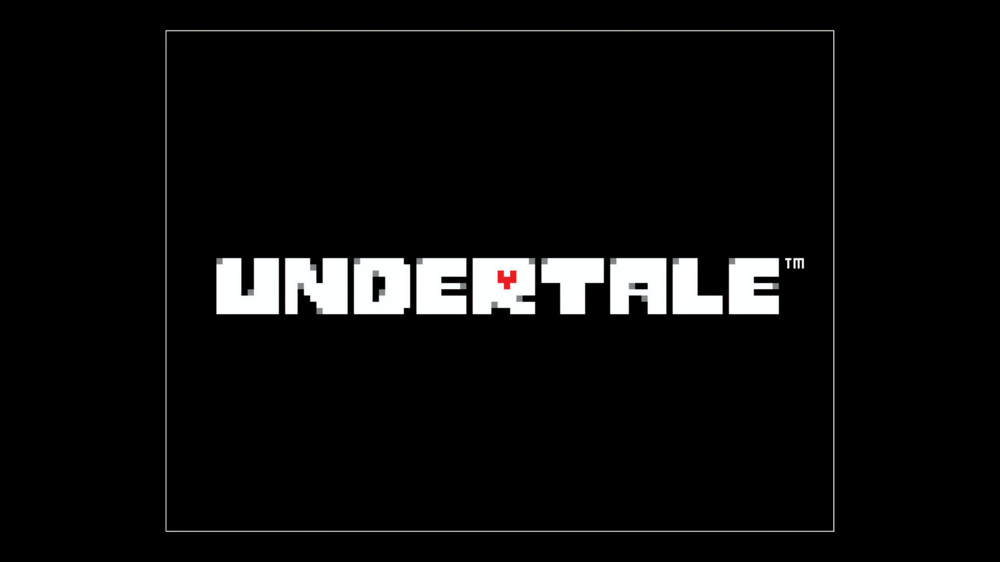

UNDERTALE BUT NOT REALLY: THE GAME

START
CREDITS
Frisk Sprite:
The Spriters Resource
Annoying Dog Sprite:
Undertale Fandom Wiki
UT Logo:
Game UI Database
Copyright: TOBY FOX 2015 ... fansite created by FRANKIE DEES 2025 for AME 220